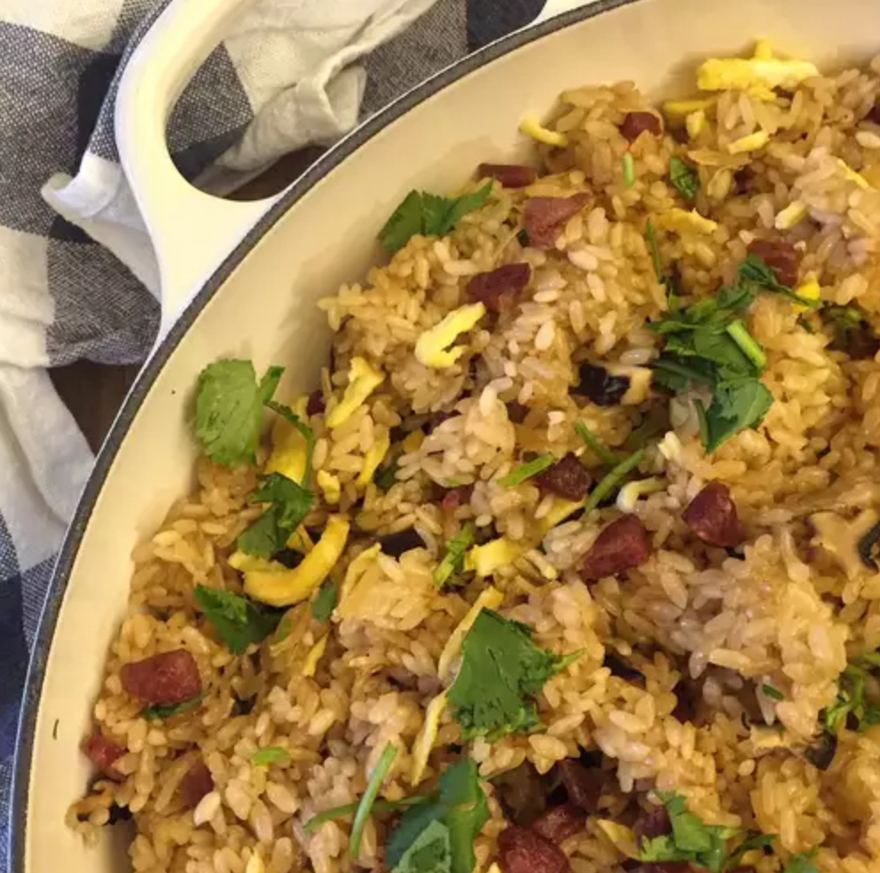

Stir-fry

Description
Stir-fry is pretty cool. Everyone should eat stir-fry. It's cheap, delicious, and quick to make. So make stir-fry!
Steps
- Soak rice in a large bowl of water until mostly translucent, about 4 hours. Rinse and drain thoroughly.
- Soak mushrooms, shrimp, and scallops in 3 separate bowls of water until softened, about 15 minutes. Drain, reserving mushroom water and discarding other water. Chop mushrooms, shrimp, and scallops into small pieces.
- Heat olive oil in a large skillet over medium heat. Pour eggs into skillet, swirling to spread out into a thin layer. Cook until mostly firm, about 1 minute. Flip and cook until no longer runny, 3 to 5 minutes.
- Transfer egg to a cutting board and allow to cool slightly. Roll into a long tube and slice into thin ribbons.
- Stir Chinese sausage into the same skillet over medium heat. Cook and stir until fragrant and some of the oil is released, about 3 minutes. Add mushrooms, shrimp, and scallops; cook for 3 to 5 minutes. Transfer sausage mixture to a bowl.
- Stir drained rice into the skillet. Cook and stir until lightly toasted, 1 to 2 minutes. Pour in reserved mushroom water, stirring constantly until water is absorbed. Add hot water, 1/2 cup at a time, stirring until water is absorbed between each addition. Cook until rice is softened, about 25 minutes.
- Season rice with light soy sauce, dark soy sauce, and sugar. Stir in egg ribbons and sausage mixture. Top with cilantro before serving.
Ingredients
- 2 cups glutinous rice
- 8 dried shiitake mushrooms
- ⅓ cup dried shrimp
- 2 dried scallops
- 1 teaspoon olive oil
- 3 eggs, beaten
- 3 links Chinese sausage, diced
- 2 cups hot water, or more as needed
- 2 tablespoons light soy sauce, or to taste
- 2 teaspoons dark soy sauce
- 1 teaspoon white sugar
- ½ cup chopped cilantro, or to taste